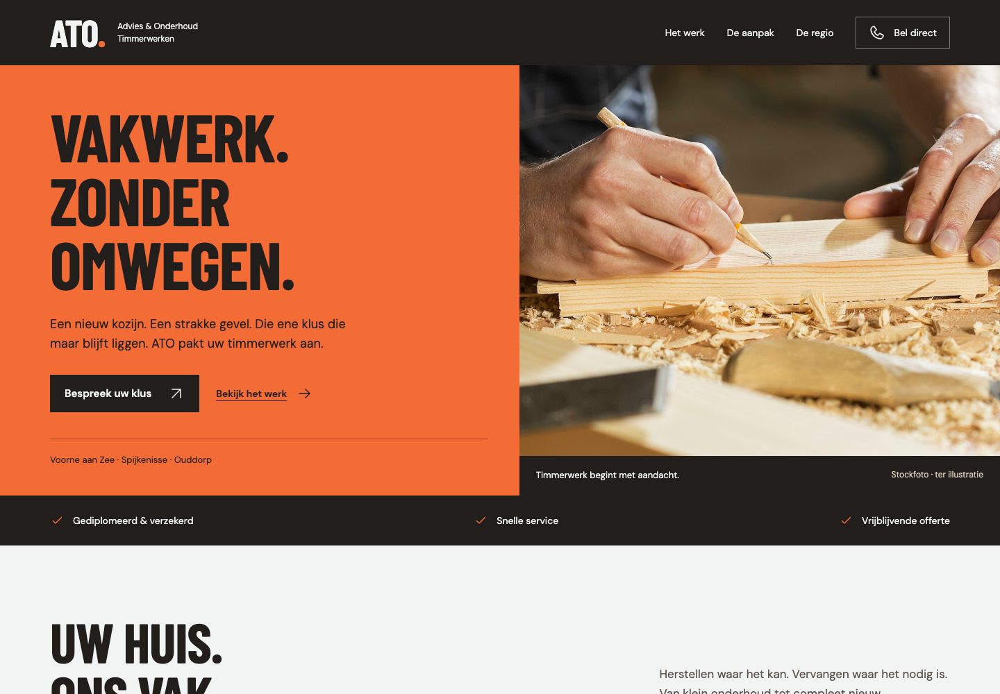
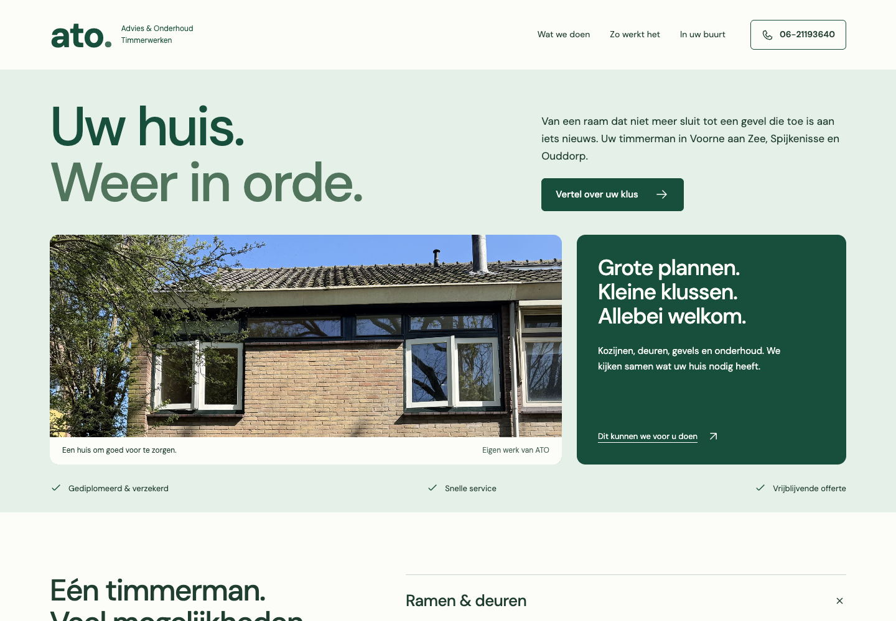

Werkplaats
Direct, stevig en herkenbaar. Oranje en zwart, compacte koppen en werkzaamheden die meteen zichtbaar zijn.
Open WerkplaatsTwee eigen ontwerpvoorstellen voor ATO Advies & Onderhoud. Elk met een andere sfeer, opbouw en manier om het timmerwerk te laten zien.

Direct, stevig en herkenbaar. Oranje en zwart, compacte koppen en werkzaamheden die meteen zichtbaar zijn.
Open Werkplaats
Licht, fris en dichtbij. Groene tinten, een woning als middelpunt en uitklapbare diensten om rustig te verkennen.
Open KustBeide ontwerpen werken op desktop en mobiel. Foto’s zijn tijdelijk stockbeeld; de voor/na-schuif is een duidelijk gemarkeerde demonstratie. Alle bedrijfsgegevens zijn overgenomen uit de aangeleverde context.